D1 Defect · S1, S2, S8, S10–S23
Pickup/drop time shown as 12:00 AM on every Admin screen (Lead Details, Update Inquiry – read-only, Confirm Booking, Upcoming/Live/Completed Trips); User-Web TC-01 submitted 3:00 PM.
Admin-Web Preprod · run admin-web-20261112-2229-INQ2TRIP · source User-Web user-web-20261112-1317-LOCAL TC-01 · 2026-11-12
Result: the User-Web inquiry (PNR MWAG650153) was tracked from Lead through Close Trip; final state Trip Closed: Yes. One specified transition could not be performed as written (S14–S15, Allocate Driver: driver auto-assigned); the run continued from S16 on the user's decision. No Advance/payment option was selected anywhere; Finance was not opened.
| Inquiry PNR | MWAG650153 |
|---|---|
| Lead ID | LD-341 |
| Admin Inquiry ID | 932 |
| Inquiry list ID | QRY-932 |
| Quote ID | 1686 |
| Booking ID | B-932 |
| Trip/Duty ID (from notification, to be confirmed) | TP-111 |
| Vehicle | KA21AB9876 |
| Final status | Trip Closed: Yes |
| Invoice notification | INV-101 Rs 4,725 (not opened - Finance out of scope) |
Matching: View Lead > Inquiry Information > Inquiry PNR exact match. Duplicate check: 10 leads of the same client created 12/11/2026 opened; only LD-341 has MWAG650153 (list search does not find PNR).
| Stage | Specified step | Result | Observed | Evidence |
|---|---|---|---|---|
| S0 | Login (step 1) | Pass | Preprod login -> /dashboard (verified earlier in session) | 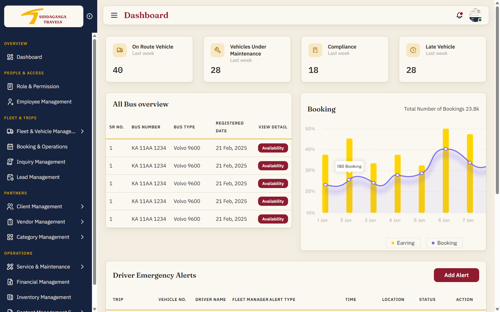 |
| S1 | Lead Management · View Lead · PNR match (step 2) | Pass | LD-341 View Lead: Inquiry PNR MWAG650153 (exact), Inquiry ID 932, Status New quotation; trip details match TC-01 (Whitefield, 12/11/2026, 1 pax, Sedan, Local, Rs 4,500) ⚠ Pickup/Drop time shown 12:00 AM; User-Web TC-01 submitted 3:00 PM | 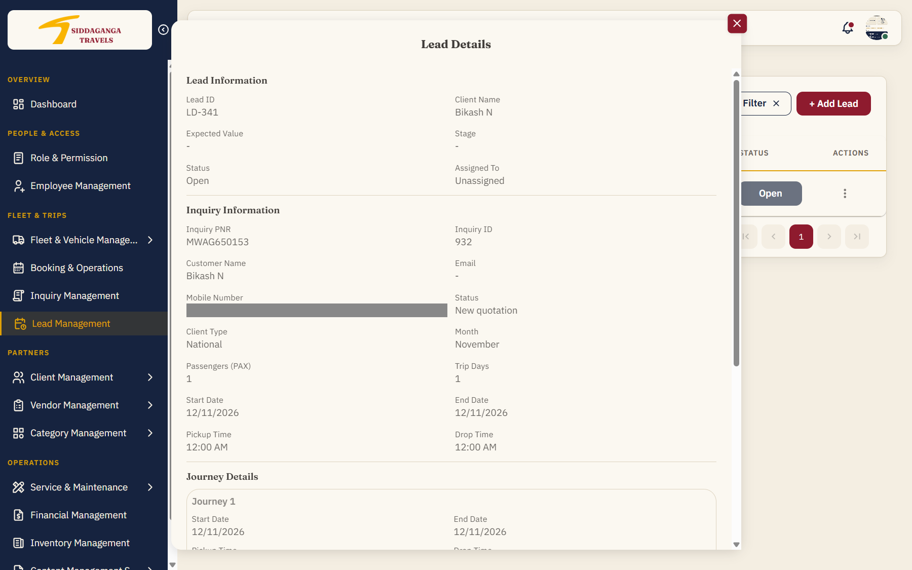 |
| S1b | Return to matched lead | Pass | Returned to LD-341 (search by Lead ID, single row) | 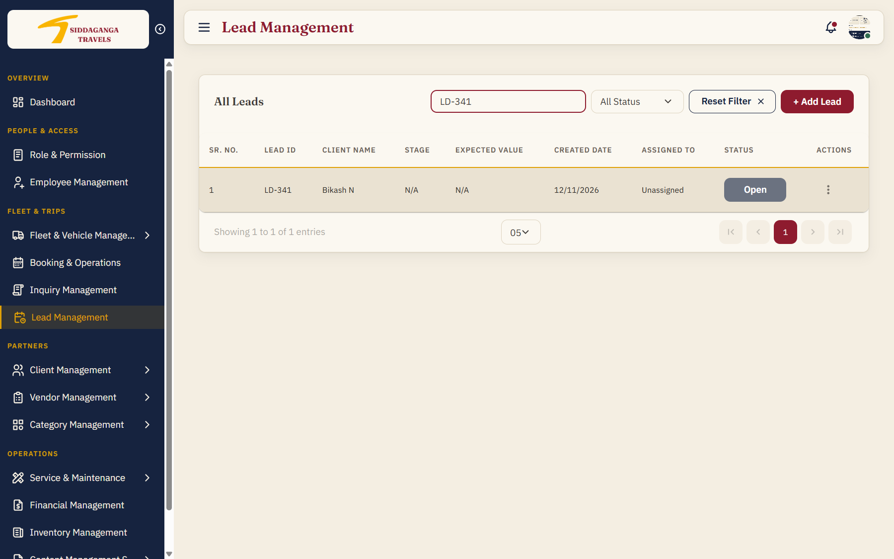 |
| S2 | Send to Inquiry (3–4) | Pass | LD-341 menu > Send To Inquiry navigated (after >2.5 s, no toast/dialog) to /dashboard/inquiry-management/update-inquiry/<id> (Update Inquiry form, pre-filled from the User-Web inquiry) Arrival/Departure time shown 12:00 AM and read-only; User-Web submitted 3:00 PM | 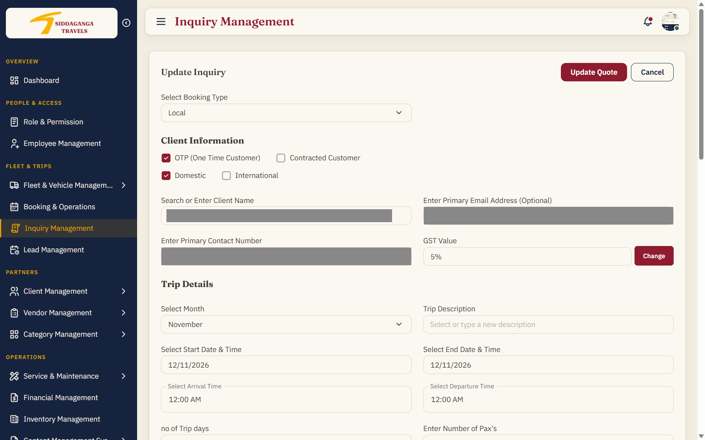 |
| S3 | Update Quote (5) | Pass | Update Quote with pre-filled values (total 4500.00, unchanged per user). POST update-inquiry 200, inquiry/details 200, lead-target/attach-inquiry 200. Button showed a loader; no visible success toast/text ⚠ No visible success confirmation after Update Quote (UX) | 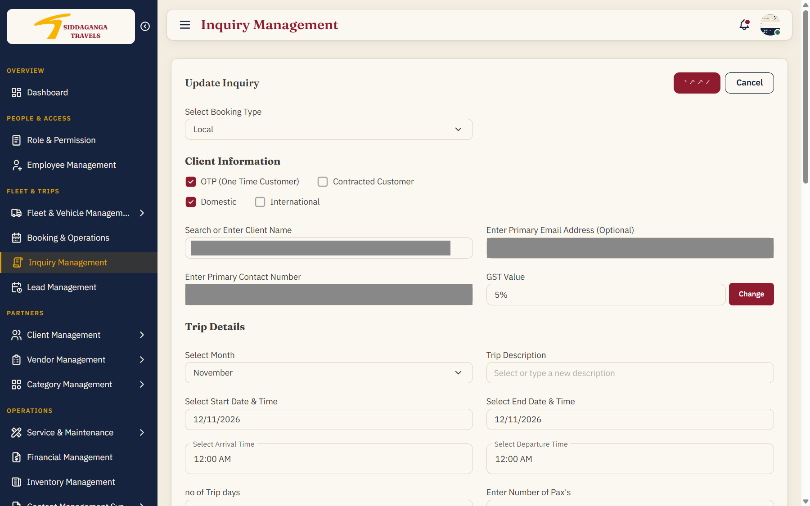 |
| S4 | Total Inquiry listed (6–7) | Pass | Total Inquiries search "932": single row QRY-932, Bikash N, Sedan, 12/11/2026, status Revised quotation. PNR not searchable in this list | 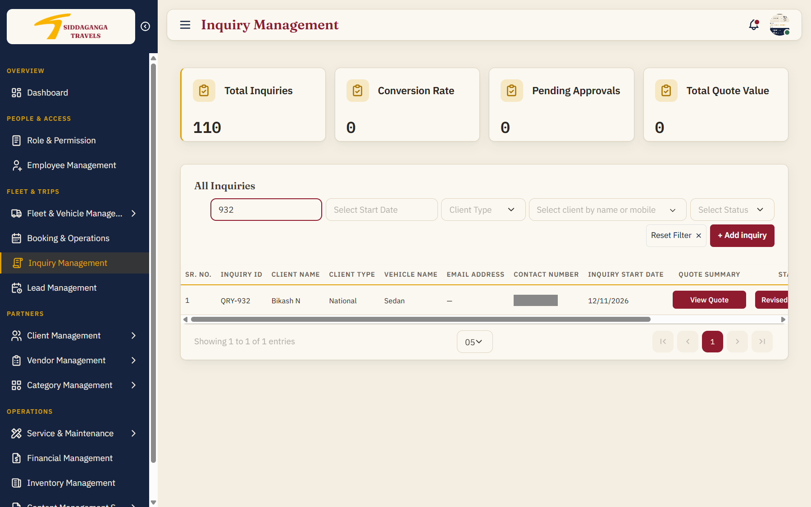 |
| S5 | Send to Booking (8) | Pass | QRY-932 menu > Send To Booking opened Choose Trip(s): Quote ID 1686, Leg 1, Local, Sedan, Rs 4500.00 (leg pre-selected) | 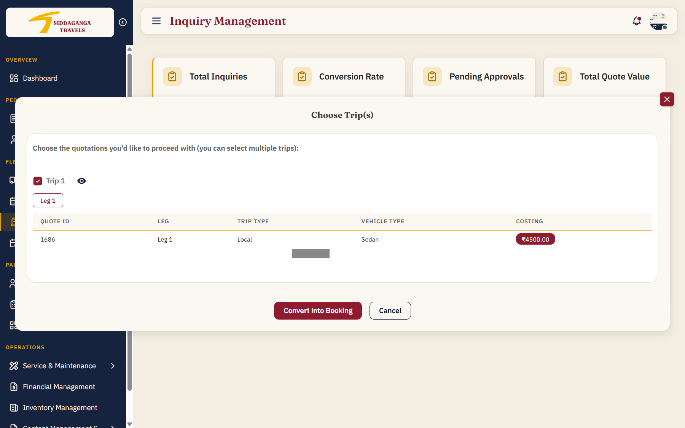 |
| S6 | Convert into Booking → Yes (9) | Pass | Convert into Booking > 'Are you sure want to convert this inquiry into booking?' > Yes. POST inquiry/send-trip-to-booking 200; alert 'New booking for inquiry MWAG650153 ... received' ⚠ Grammar in confirmation: 'Are you sure want to convert' | 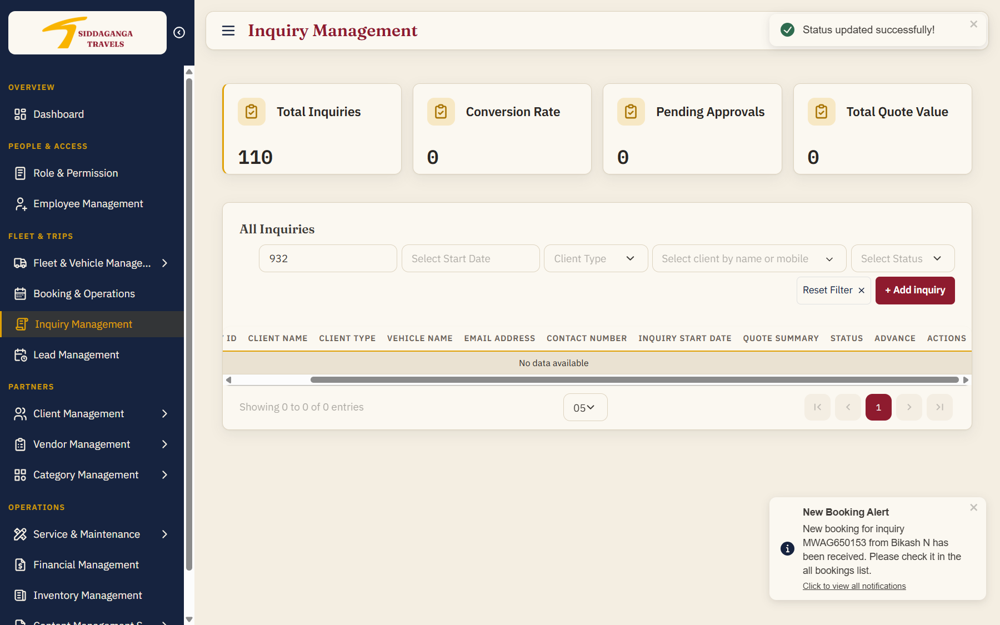 |
| S7 | Prebooking listed (10–11) | Pass | Total Booking > Pre-Bookings, search 932: single row B-932, Bikash N, 1, Local, 12 Nov 2026, Rs. 4,500. PNR not searchable | 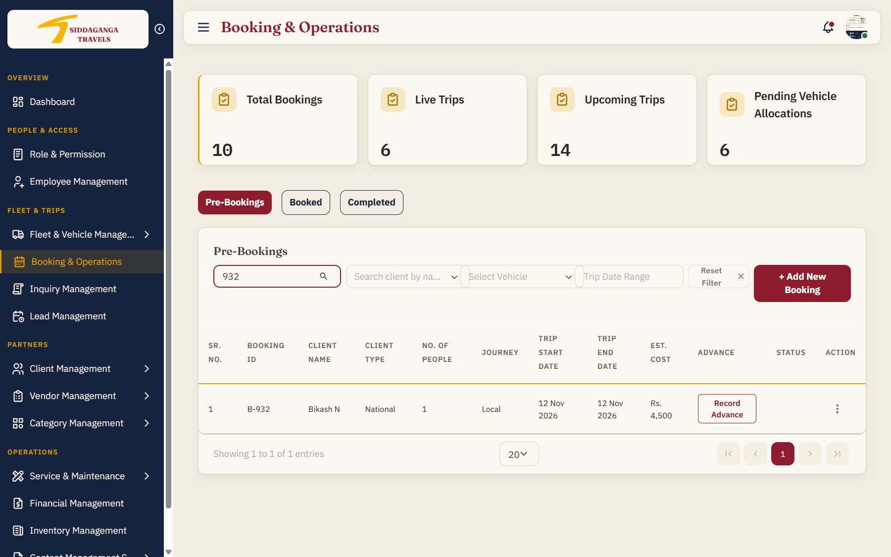 |
| S8 | Confirm Booking (12) | Pass | B-932 menu > Confirm Booking opened /booking-management/confirm-booking/<id> form (pre-filled: Local, 12/11/2026, pax 1, Sedan, total 4500.00). Form Confirm Booking > POST update-inquiry 200, booking/details 200, booking/confirm 200; toast 'Data updated successfully !'. No separate confirmation popup Automation incident before this: a generic menu script opened B-932 'Cancel and Notify' dialog; Cancel & Notify NOT clicked, dialog closed, B-932 verified intact in Pre-Bookings after reload (screenshots/inquiry-to-trip/admin-web-20261112-2229-INQ2TRIP/S08-B932-intact-after-reload.png). Form briefly renders empty fields (GST 0%) while loading. | 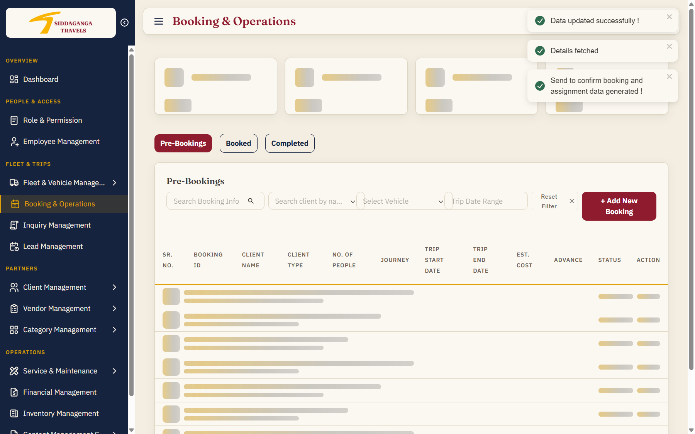 |
| S9 | Booked listed (13) | Pass | Total Booking > Booked: B-932 listed (Bikash N, Local, 12 Nov 2026, Rs. 4,500). Counters: Total Bookings 10->9, Upcoming Trips 14->15. Booked tab has no booking-ID search | 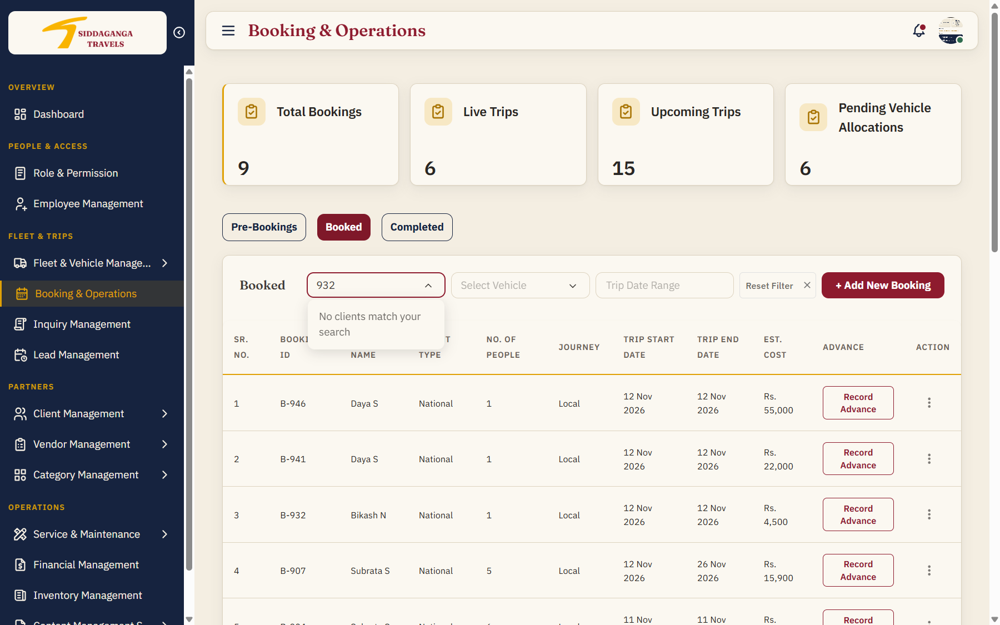 |
| S10-identify | Upcoming Trip · identify record | Pass | Upcoming Trips (/booking-management/upcoming-trips) lists by TRIP ID; the Bikash N 12 Nov 2026 12:00 AM row has a BLANK Trip ID and is the only Bikash N row of 15. No View option in its menu (Vehicle Allocation, Edit Booking, Send To Trip Approval, Cancel Booking, Cancel & Notify). Edit Booking showed popup 'Record Advance Payment? Bikash N - Booking B-932' which confirms identity; none of its buttons clicked, closed via browser Back ⚠ Trip ID blank for B-932 in Upcoming Trips; duplicate rows across pages (TP-105 twice, two identical Subrata S 11 Nov rows); Edit Booking unexpectedly opens a Record Advance prompt | 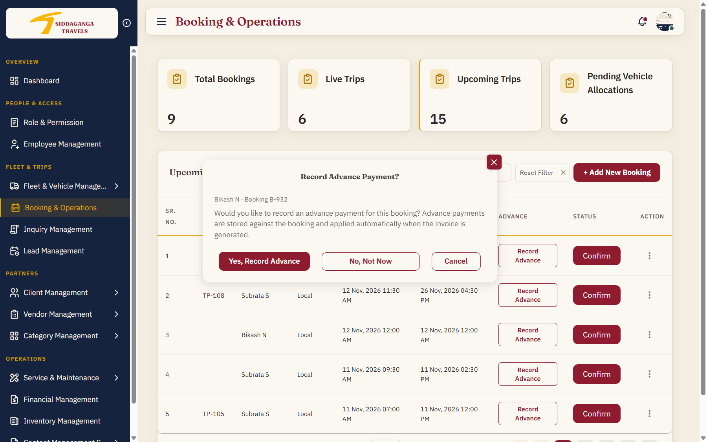 |
| S10 | Send to Trip Approval → Yes (14–15) | Pass | Bikash N/B-932 row > Send To Trip Approval > 'Are you sure you want to send this booking to trip approvals?' > Yes. POST booking/send-to-trip-approval-vechicle-allocation-list 200; toasts 'Data generated !' and 'New Duty Assignment New duty TP-111 - Local, report 12:00 AM @ -, drop -'. No advance prompt ⚠ Duty notification shows pickup '@ -' and drop '-' (Whitefield missing); API path typo 'vechicle' | 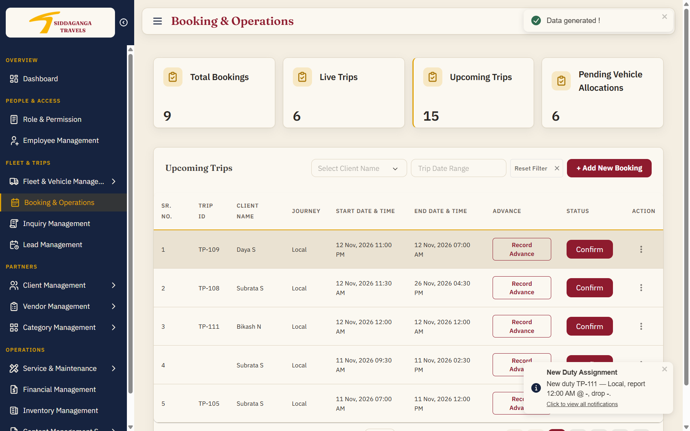 |
| S11 | Allocation Portal · Allocate enabled (16–17) | Pass | Fleet & Vehicles > Vehicle Allocation Portal (Trip Approvals & Vehicle Assignment, page 2 of 7 entries): TP-111 Bikash N Bengaluru->Bengaluru 12/11/2026 No-invoice, status Confirm; Allocate enabled (Allocate Driver not yet shown). Only Bikash N row; no client-name/ID search used | 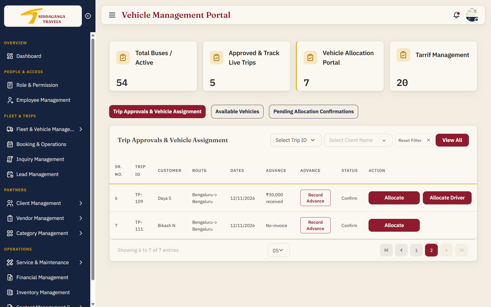 |
| S12 | Allocate · Continue steps (18) | Pass | TP-111 Allocate > 'Record Advance Before Allocation? Bikash N - Trip TP-111' > No, Continue to Allocation (advance NOT recorded) > 'Select the type of allocation you need: Dynamic Allocation' (pre-selected) > Continue > Allocation Portal: Trip Number TP-111, Bus Required Sedan, Status Not Assigned Yet | 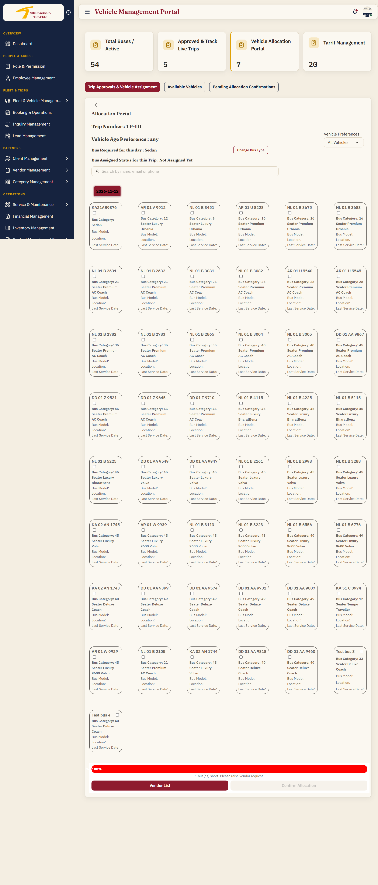 |
| S13 | Allocate Vehicle → Confirm Allocation (19) | Pass | Selected first Sedan KA21AB9876 (user: first valid option) > Confirm Allocation (no separate 'Allocate Vehicle' button, no confirm dialog). POST assign-vehicle 200; notification 'New pre-departure record generated for trip TP-111 (KA21AB9876)' ⚠ Allocation page still shows 'Bus Assigned Status for this Trip : Not Assigned Yet' right after a successful allocation | 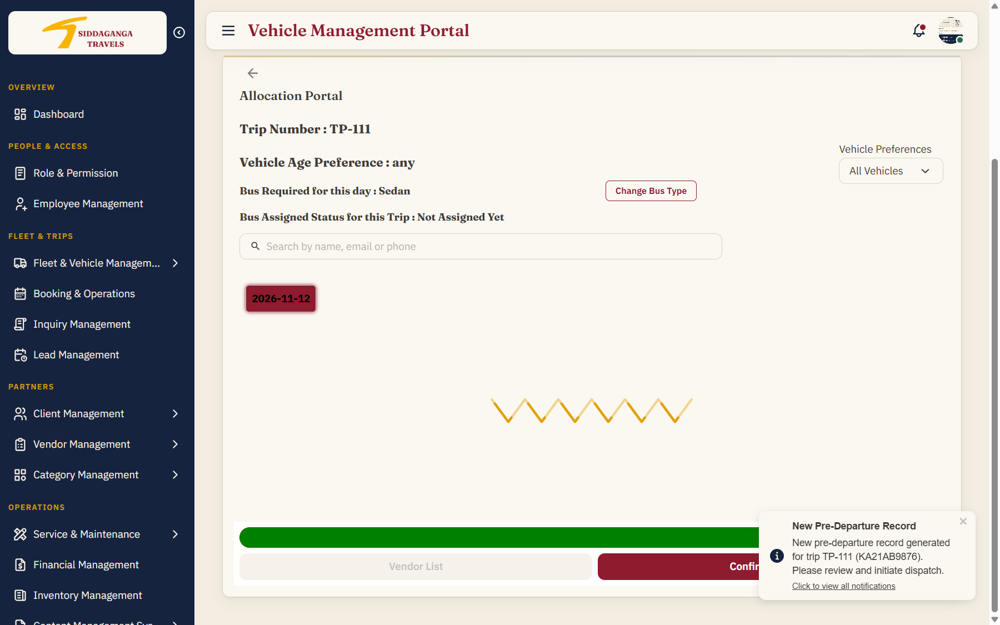 |
| S14 | Return to portal · Allocate Driver available (20–21) | Blocked | After Confirm Allocation, TP-111 is no longer in Vehicle Allocation Portal (Trip Approvals list 7->6; not in Pending Allocation Confirmations). 'Allocate Driver' was never offered for TP-111. Record found instead in Approved & Track Live Trips > Approved Vehicles: TP-111, Bikash N, KA21AB9876, Sedan, cap 4, Local, Whitefield->Whitefield, 12 Nov 2026, Assigned Driver 'Test Driver' (auto-assigned), Status 'On trip'. Flow deviates from the specified steps 20-22; paused for user decision ⚠ Driver auto-assigned without Allocate Driver step; status 'On trip' shown before dispatch/start | 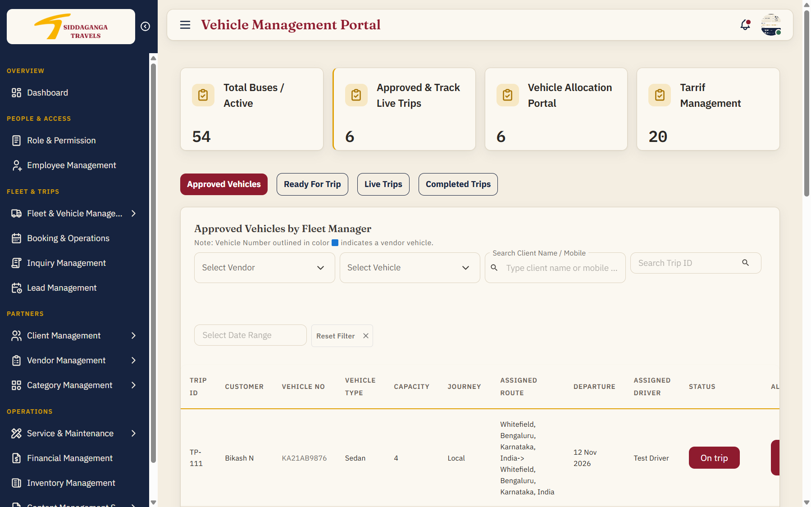 |
| S15 | Allocate Driver (22) | Not Run | Allocate Driver not available; driver already shown as Test Driver | |
| S16 | Approved & Track Live Trips listed (23–24) | Pass | Approved & Track Live Trips (/fleet-vehicle-management/approved-trips) > Approved Vehicles: TP-111 listed (Bikash N, KA21AB9876, Sedan, Test Driver, On trip) | |
| S17 | Initiate Vehicle Dispatch (25–26) | Pass | TP-111 menu > Initiate Vehicle Dispatch > 'Record Advance Payment? Bikash N - Trip TP-111' > No, Not Now (advance NOT recorded) > form (Trip ID TP-111, KA21AB9876). Predeparture Checklist: Safety equipment confirmation ticked, note added (photos optional, skipped) > Next > Trip Sheet: Start Odometer 10000, Opening Km 10000, Fuel 20, Last Diesel 20, Mileage 12, Helper 'QA Test Helper', permit test PDF (test-data/qa-test-permit.pdf) > Generate Trip Sheet & Mark Vehicle Ready > POST update-pre-depature-check 200; 'Trip is ready for dispatch - TP-111 (KA21AB9876)'. Two earlier submits rejected: 'permitDocument cannot be null' (client), '"Helper" is not allowed to be empty field' (API 400) ⚠ Permit document and Helper are required but not marked required; raw validation messages ('permitDocument cannot be null', '"Helper" is not allowed to be empty field'); text 'Tabbi have no data'; API path typo 'depature' | 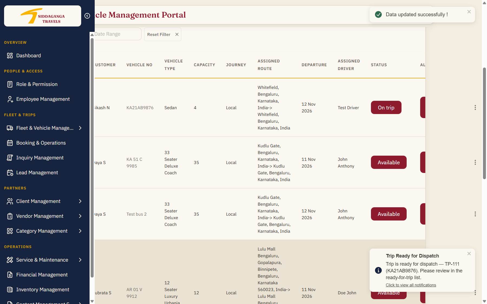 |
| S18 | Ready for Trip listed (27) | Pass | Approved & Track Live Trips > Ready For Trip: TP-111 listed (Bikash N, Local, 12/11/2026, Whitefield->Whitefield, status Schedule) | 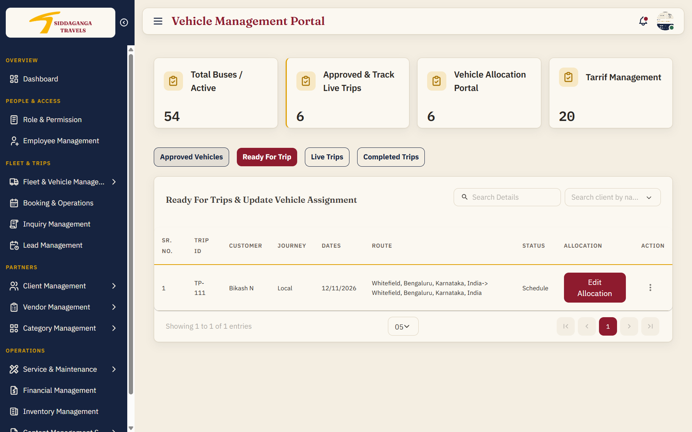 |
| S19 | Start Trip → Confirm (28) | Pass | Ready For Trip TP-111 menu (Start Trip, Edit Tripsheet, Edit Bus Details, Edit Driver Details, Add Extra Amenities, Record Advance, Cancel Trip) > Start Trip > Record Advance prompt declined (No, Not Now) > Start Trip Are you sure you want to start this trip? > Confirm. POST start-trip 200; toast Data updated successfully! ⚠ Record Advance prompt shown before Start Trip as well | 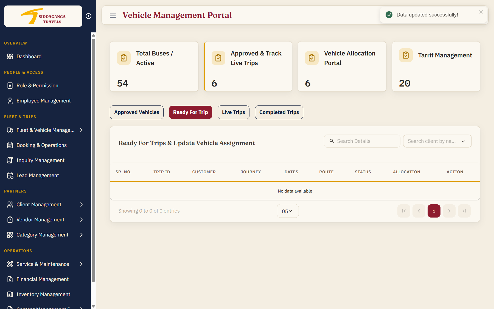 |
| S20 | Live Trips listed (29) | Pass | Live Trips: TP-111 listed (Bikash N, Local, 12/11/2026, Whitefield->Whitefield, Assigned Status On going) ⚠ Live Trips CUSTOMER TYPE shows Local (journey type) instead of National | 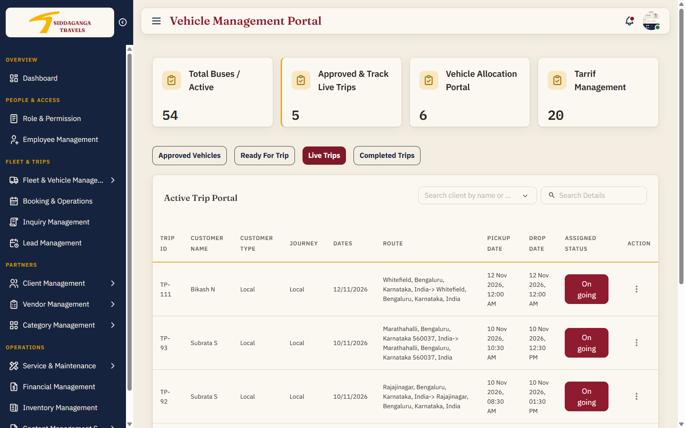 |
| S21 | Complete Trip (30) | Pass | Live Trips TP-111 menu > Complete Trip > Record Advance prompt declined (No, Not Now) > Complete Trip Are you sure you want to complete this trip? > Confirm. POST end-trip 200; Data updated successfully! | 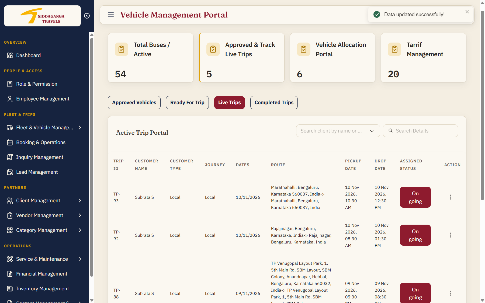 |
| S22 | Completed Trip listed (31) | Pass | Completed Trips: TP-111 listed (Bikash N, National, 12/11/2026, Whitefield->Whitefield, Estimated Rs 4,500.00, Actual Rs 4,500.00, Trip Closed: No). Menu: View Trip Summary, Close Trip, Record Advance | 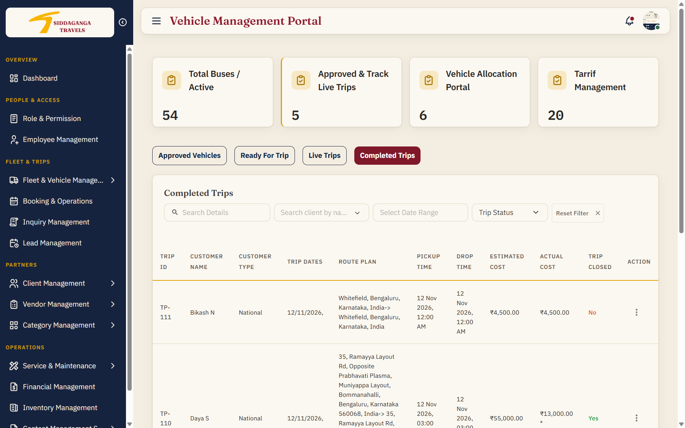 |
| S23 | Close Trip (32) | Pass | Completed Trips TP-111 > Close Trip > Record Advance prompt declined (No, Not Now) > Close Trip Sheet (Post-arrival Checklist pre-filled from dispatch) > Next > Trip Sheet: Closing Km 10040, Total Km 40, Present Diesel 20 (others pre-filled; no extra expenses) > Generate Trip Sheet & Mark Vehicle Ready > POST update-post-depature-check 200; notification 'New invoice INV-101 for Rs 4,725 from Bikash N (trip MWAG650153)'. Completed Trips now shows Trip Closed: Yes, Estimated Rs 4,500.00, Actual Rs 4,500.00 ⚠ Close Trip still offered in the menu after the trip is closed; close-sheet submit labelled 'Generate Trip Sheet & Mark Vehicle Ready'; 'Select Date' and 'Vehicle' inputs both named vehicleNo (Vehicle input holds '60') |
Pickup/drop time shown as 12:00 AM on every Admin screen (Lead Details, Update Inquiry – read-only, Confirm Booking, Upcoming/Live/Completed Trips); User-Web TC-01 submitted 3:00 PM.
Upcoming Trips: B-932 row has a blank TRIP ID; record could only be identified via the Edit Booking prompt ("Booking B-932").
Upcoming Trips pagination repeats rows (TP-105 appears twice; two identical Subrata S 11 Nov rows on different pages).
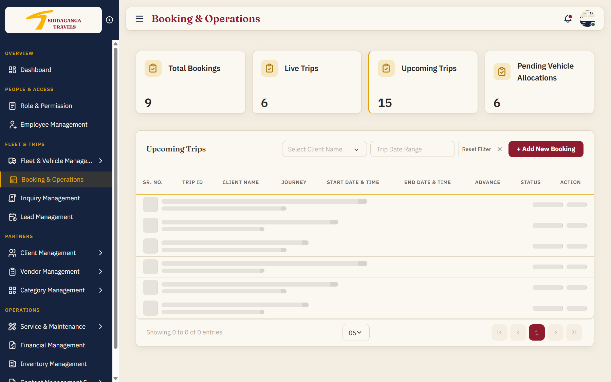
After a successful allocation (assign-vehicle 200) the page still shows "Bus Assigned Status for this Trip : Not Assigned Yet".
Dispatch Trip Sheet: Permit document and Helper are mandatory but not marked; errors are raw ("permitDocument cannot be null", "\"Helper\" is not allowed to be empty field", API 400).
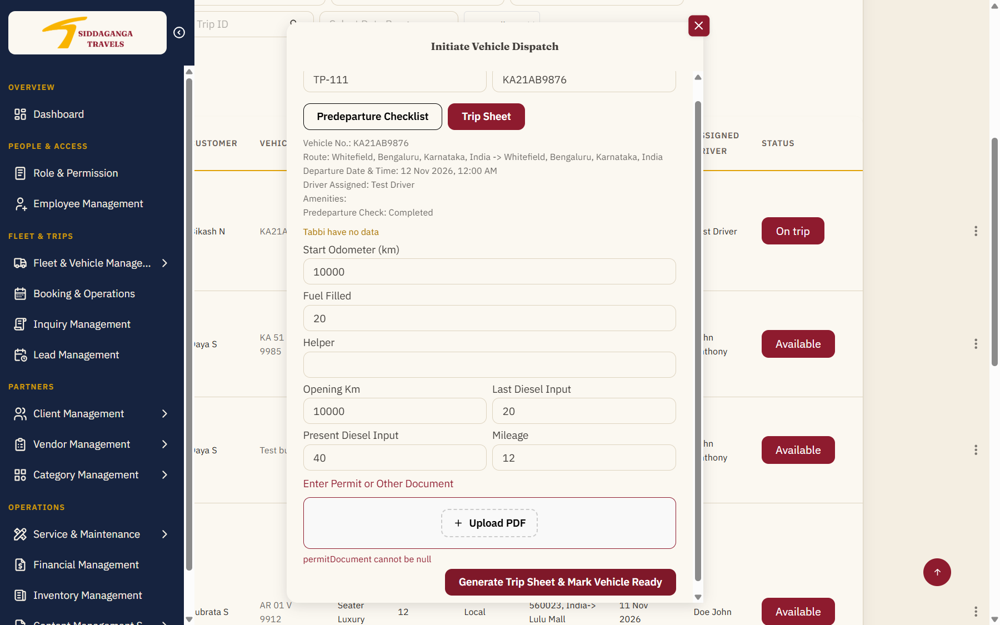
Duty notification "New duty TP-111 — Local, report 12:00 AM @ -, drop -": pickup and drop locations missing although the trip has Whitefield.
Live Trips CUSTOMER TYPE shows "Local" (journey type) instead of "National".
After closing, Completed Trips still offers "Close Trip"; close-sheet submit is labelled "Generate Trip Sheet & Mark Vehicle Ready"; "Select Date" and "Vehicle" inputs are both named vehicleNo and the Vehicle input holds "60".
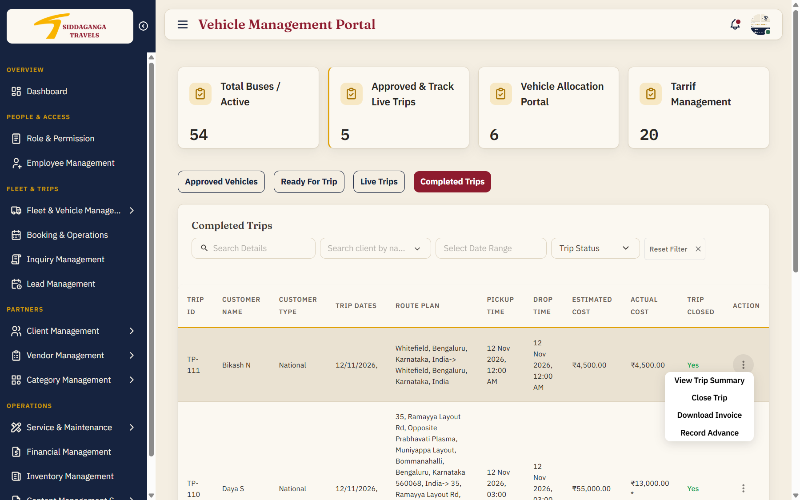
Steps 20–22 not possible: right after Confirm Allocation TP-111 left the Vehicle Allocation Portal; "Allocate Driver" was never offered and "Test Driver" was auto-assigned; status "On trip" shown before dispatch. Continued from S16 on user decision. Confirm whether auto-assignment is intended.
Upcoming Trips → Edit Booking opens "Record Advance Payment?" instead of an edit form.
"Record Advance Payment?" prompt interrupts Allocate, Dispatch, Start, Complete and Close (declined each time with No, Not Now / No, Continue to Allocation).
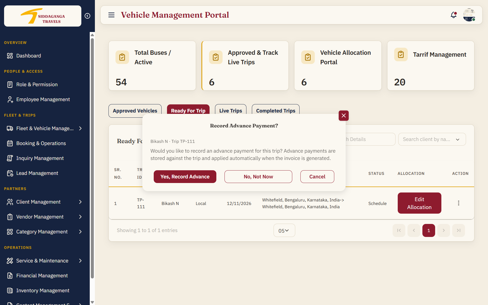
Send To Inquiry navigates after >2.5 s with no feedback; Update Quote shows no success message (API 200 only).
Inquiry PNR is not searchable in Lead, Inquiry or Booking lists; lead had to be verified via View Lead (10 candidate leads opened for the duplicate check).
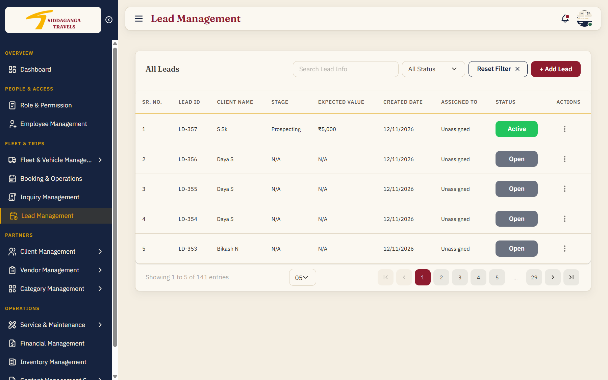
Grammar/typos: "Are you sure want to convert…", "Tabbi have no data"; API paths "vechicle", "depature".
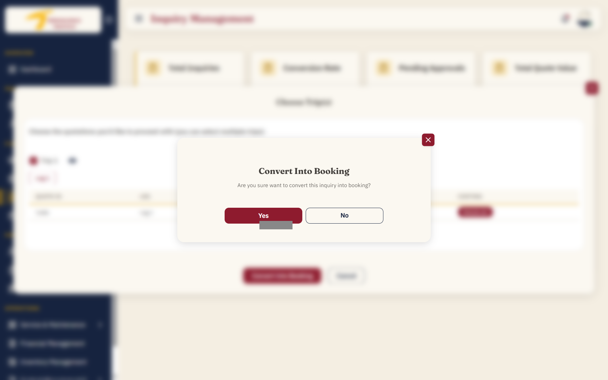